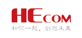

TMT（Technology，Media，Telecom）是科技、媒体和通信三个英文单词的首字母缩写，TMT产业是以互联网等媒体为基础将高科技 公司和电信业等行业链接起来的新兴产业。新希望集团注重创新，一直关注新兴领域的变革和发展，对TMT行业里的最新趋势保持 高度关注。新希望认为TMT领域的发展代表了未来经济发展的一大动向，因此加大了对这些行业的投资，并通过这些投资带动集团 的创新变革氛围，为现有板块业务服务，促进产业的发展。目前，新希望在TMT领域的投资主要集中于电商、互联网金融、移动营 销服务和社交应用等行业。
-
民生电商
民生电子商务有限责任公司（简称民生电商）2013年8月在深圳注册成立， 2014年12月获得工信部发放的虚拟运营牌照。 新希望集团是民生电商的大股东。
民生电商是国内首家基于精准大数据并与商业银行资源结合，由金融、互联网、电子商务等业界一流专业人士组建的互联 网金融公司。目前，民生电商旗下已经拥有民生易贷、民生易贸、民生商城、民生转赚、邻帮邻家园网等多个业务平台， 为客户提供互联网时代的全新金融服务。 -
和创科技
和创科技成立于 2009 年，2015年11月挂牌上市。和创科技致力于为大中小企业提供移动营销管理服务，通过建立三元、 新希望集团、复星、依文和居然之家等标杆用户，在垂直领域纵向扩张。新希望集团和新希望六和均为和创科技的股东。
和创科技主要提供名为红圈营销的移动销售管理产品和云服务，将管理贯穿于整个销售过程，通过为快消品行业、 医药行业、农牧行业量身定制营销管理平台，帮助企业提升管理模式。 -
in
in是一款时尚品位分享社交应用，是九言科技旗下品牌网站。in于2014年6月6日上线，2016年3月登陆新三板。新希望集 团参与其B轮及新三板挂牌定增。
in是国内最大的图片社交软件，具备处理并形成生活大数据的能力。in基于场景化营销形成有效的用户互动，将营销与广 告植入两者完美结合起来，拥有可观的曝光品牌，成功实现了商业化。 -
微影时代
北京微影时代科技有限公司是成立于2014年5月的文化娱乐营销与发行公司。2015年11月，微影时代完成C轮融资，融资金 额15亿人民币，为移动票务市场垂直领域最大单笔融资。新希望是本轮融资的参投方之一。
微影时代业务覆盖电影、演出、体育三大领域，是最具潜力的娱乐大数据公司。旗下移动票务平台“微票儿”是目前合作 影院数量、观影人群覆盖率第一的在线选座平台。